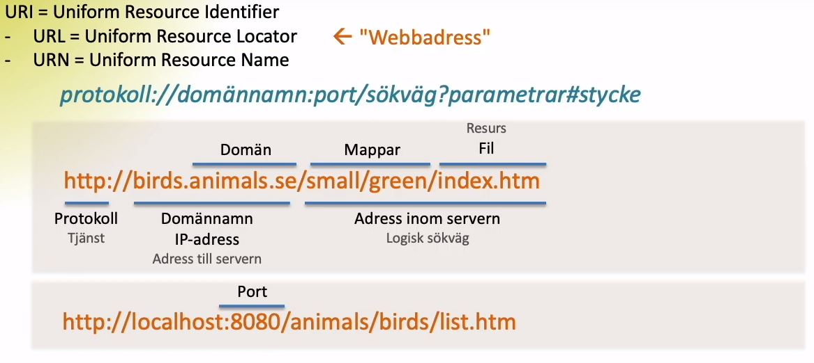

Vad avses med termerna klient och server?
klienter och serverar är anslutna till regionala nätverk och sammakopplade via internet. Med klienten menas det programmet som körs i t.ex. en dator. Det kan vara en webbläsare eller ett epostprogram m.m. På en server finns program som är kopplade till klienterna. ex. mailservar och webbserverar. Klienten begär en tjänst från servern. t.ex. en html-kod för en hemsida. Det sker när man skriver in en URL i sin webbläsare. Om webbsidan är tillgänglig skickas html-koden över till klienten. Då skickas även CSS-filer och bilder och annat som krävs för att visa hemsidan.
Beskriv vad var och en av protokollen TCP och IP gör på sändande och mottagande sida.
Protokoll är olika regler som bestämmer hur kommunikationen för dataöverföringen i ett nätverk sker. TCP står för transmition Control Protocol. Sändaren delar upp och numrerar information som ska skickas och skickar den sedan vidare till nästa nivå (IP). IP står för Internet Protocol adresserar informationen med IP-adressen och skickar det till mottagaren som tar emot det och skickar det tillbaks till TCP igen som då sammansätter informationen igen. Varje enhet som är ansluten till internet har ett eget IP-nummer. Till en början bestod dessa av 4 siffror mellan 0 och 255. Men i takt med att internet växte så utvecklade man IPv6 för att utöka antalet IP-adresser.
Beskriv de delar som följande url består av
http://webbteknik.abc.se:8082/kurs1/uppg/u1.html#fragor
Med URL menas Uniform Resource Locator. Den första delen i denna URL (http) anger vilken tjänst vi vill komma åt. Http är ett protokoll som används för webben. Http sköter kontakten mellan webbläsaren och webbservern. Nästa del är domännamnet. Som i detta fall är (/webbteknik). Domännamnet kan ses som namnet på webbsidan. Det är också kopplat till Ip-adressen. Delen efter det kallas ett underdomän(abc). (.se) är en landskod men det behöver inte betyda att domänen ligger i Sverige men oftast är webbsidan kopplat till svensk information. Nästa del kallas en port. Det är en ingång till en server. Port nummer 80 avser internet och behövs i vanliga fall inte skrivas men om man använder t.ex. en temporär server behöver man specificera vilken port man vill tillgå(:8082.). Nästa del anger vilken mapp/mappar vi vill ta del av (kurs1/uppg/u1) och den sista delen anger vilken fil i denna mapp vi vill öppna(.html). Sista delen är ett stycke inom filen vi har valt att öppna. De identifieras med ett stakettecken(#fragor).
